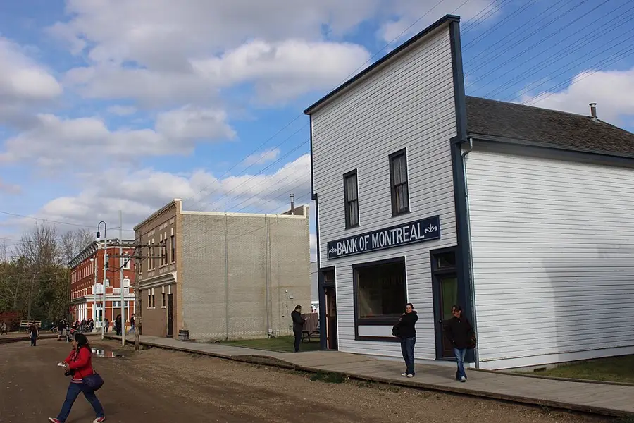

대표 로고대표 브랜드 마크
대표 로고대표 브랜드 마크몬트리올 은행 Bank of Montreal
몬트리올 은행(Bank of Montreal)은 1817년에 설립된 캐나다의 은행이다. 캐나다에서 세 번째로 큰 은행이며, 캐나다에서 가장 오래된 은행이다.
최종 업데이트
몬트리올 은행은 어떤 브랜드인가
몬트리올 은행은 캐나다에 기반을 둔 은행으로, 규모 면에서 캐나다에서 세 번째로 큰 은행이다. 이 은행은 BMO 금융그룹(Bank Of Montreal Financial Group)의 계열사이며, 프랑스어 표기는 Banque de Montréal이다.
1817년에 설립되어 캐나다에서 제일 오래된 은행이며, 1977년에 본사를 토론토로 이전했지만 법적 본사는 몬트리올에 있다. 포브스 선정 글로벌 2000대 기업 중 84위를 차지했다.
캐나다를 비롯해 전 세계에 1,100개가 넘는 지점을 갖춘 세계적인 은행으로 성장했다. 2025년 8월 손흥민이 새로 이적한 LAFC의 유니폼 중앙에 적힌 스폰서이기도 하다.
몬트리올 은행은 어떻게 시작되고 성장했나
몬트리올 은행은 1817년 11월 3일 캐나다 퀘벡주 몬트리올에서 창립했다. 창업자로는 John Richardson, Robert Armour, Austin Cuvillier가 알려져 있다.
1868년 Commercial Bank of Canada를 인수한 것을 시작으로 1925년 Molson Bank까지 여러 은행을 인수했다. 그 사이 Exchange Bank of Yarmouth(1903년), People's Bank of Halifax(1905년), People's Bank of New Brunswick(1907년), Bank of British North America(1918년), Merchants Bank of Canada(1922년)를 차례로 인수했다.
1977년에는 본사를 몬트리올에서 캐나다 금융의 중심지인 토론토로 이전했다.
몬트리올 은행의 브랜드 아이덴티티는 무엇인가
1817년 설립된 캐나다에서 제일 오래된 은행으로, 본사를 토론토로 옮긴 뒤에도 법적 본사는 몬트리올에 두고 BMO 금융그룹에 속해 있다.
몬트리올 은행은 지금 어떤 상태인가
현재 캐나다에서 세 번째로 큰 은행이며, BMO 금융그룹의 계열사이다. 포브스 선정 글로벌 2000대 기업 중 84위를 차지했다.
캐나다를 비롯해 전 세계에 1,100개가 넘는 지점을 두고 있으며, 2025년 8월에는 손흥민이 새로 이적한 LAFC의 유니폼 중앙에 스폰서로 이름을 올렸다. 실질적인 본사는 토론토로 옮겼으나 법적 본사는 몬트리올에 적을 두고 있다.
몬트리올 은행 로고는 어떻게 변해왔나
대표 로고대표 브랜드 마크사진으로 보는 몬트리올 은행의 역사

자주 묻는 질문
몬트리올 은행는 어느 나라 브랜드인가요?
몬트리올 은행는 캐나다의 금융 브랜드입니다.
몬트리올 은행는 언제 설립되었나요?
몬트리올 은행는 1817년 설립되었습니다.
몬트리올 은행의 브랜드 아이덴티티는 무엇인가요?
1817년 설립된 캐나다에서 제일 오래된 은행으로, 본사를 토론토로 옮긴 뒤에도 법적 본사는 몬트리올에 두고 BMO 금융그룹에 속해 있다.
몬트리올 은행는 현재 어떤 상태인가요?
현재 캐나다에서 세 번째로 큰 은행이며, BMO 금융그룹의 계열사이다.
몬트리올 은행의 창업자는 누구인가요?
몬트리올 은행의 창업자는 John Richardson, Robert Armour, Austin Cuvillier입니다(위키데이터 기준).
몬트리올 은행의 본사는 어디에 있나요?
몬트리올 은행의 본사는 Bank of Montreal Head Office, Montreal에 있습니다(위키데이터 기준).
몬트리올 은행의 공식 웹사이트는 어디인가요?
몬트리올 은행의 공식 웹사이트는 http://www.bmo.com/ 입니다.
출처와 검증
몬트리올 은행 관련 참고: 공식 웹사이트 · 위키데이터 Q806693 · 한국어 위키백과 · 영어 위키백과. 브랜드명은 한글과 원어를 함께 표기하되 데이터에 없는 표기는 만들지 않습니다. 기원 국가·설립연도는 검수된 정의문에서 확인된 값을 우선하고, 없을 때만 공식 웹사이트 URL이 일치하는 위키데이터 개체의 값을 씁니다. 위키데이터 값은 2026-11-11 기준입니다.